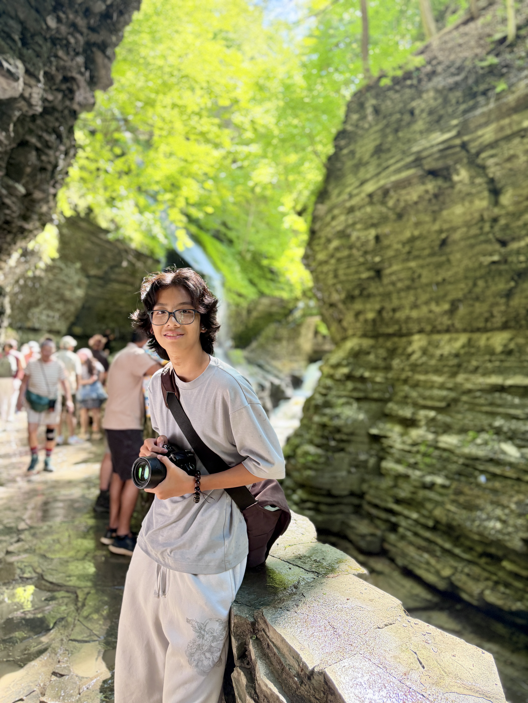

Hello there
I'm Ryan — I chase light with a camera.
I'm a landscape and travel photographer drawn to the quiet in-between moments: mist rising off a waterfall, sun slipping through a forest canopy, a city softening at dusk. Photography, for me, is a way of paying attention.
Most of this collection was made wandering the Niagara gorge, the trails of the Northeast, and the streets of New York — usually with one lens and no particular plan.
Favorite conditions: just after rain. Favorite time: the last hour of light. Camera: Nikon DSLR with a trusty 35mm.
Niagara Falls
New York City
Forest trails